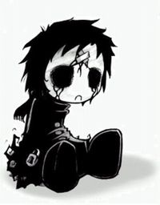
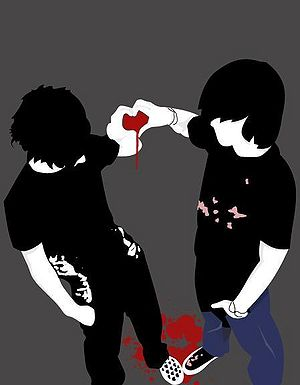

Caboso
 De: La Frikipedia, la enciclopedia extremadamente seria.
De: La Frikipedia, la enciclopedia extremadamente seria.
| De la serie tribus urbanas del mundo:
|
| Caboso
|
Ejemplo de la tribu

|
| "Foto Alternativa"
|
|
| Hábitat
|
Lugares fomentados por Jebis
|
| Inteligencia
|
A la par que su frikismo "oculto", o al contrario. No se sabe.
|
| Frase favorita
|
...
|
| ¿Peligroso?
|
Si su mirada es laser, si.
|
| Obsesión
|
Aparentar que son mas duros y jebis que nadie.
|
| Notas
|
(Oh, me están mirando. Les miraré mal para que sepan que soy muy jebi.)
|
Individuos de apariencia "heavy" con inevitables tendencias y/o intereses frikis. Logicamente considerados "falsos heavys", esta especie se caracteriza por la forma que adopta su mirada al encontrarse cerca de un jebi.
Este interes por tratar de aparentar ser mas duro, rebelde, radical, o cualquier otra mierda, se contradice cuando estos mismos dan claras señales de que no tienen ni puta idea del Heavy Metal, ademas de sus ya mencionadas costumbres frikis, que no ayudan nada.
Características principales
Esta especie consta de unas caracteristicas adicionales:
 Cualquier parecido con los
emos es pura coincidencia...
- Edad comprendida entre los 14 y los 22 años. Puede variar.
- Nucleos sociales: Generalmente se reunen en grupos constituidos por sus semejantes, y demas individuos frikis. Tambien se les suele ver junto a verdaderos jebis, pero solo por conveniencia, o para poder alardear de los jebis que son ellos. Pero normalmente son los Cabosos los que salen afectados...
- Conocimiento musical: Nulo o muy bajo. Compruebese porque acostumbran a llevar camisas con los grupos mas "satánicos" y "radicales", y que cuando les preguntas sobre un grupo como Black Sabbath... todos sabemos lo que pasa, ¿no?
- Acostumbran a mirar con especial odio a los individuos con el pelo largo que no lleven una indumentaria "adecuada", segun ellos. Es decir, que si no vas aparentando, no eres nada.
Aspecto
Rasgos aproximados:
- Ropa tradicional jebi: Oscura, de cuero, rota, con cadenas, y un largo etc.
Algun que otro o muchos complementos frikis. - Camisa de un grupo de Metal: Burzum, Inmortal, Mayhem,etc...
- Sobrecargada cantidad de bisuteria y complementos jebis. Su filosofía es: "Cuantos mas clavos lleve, mejor."
- Sea verano o invierno, una chupa de cuero. De ser sintético, se inventarán alguna cosa para hacer creer
en vano que es cuero autentico.
- Cuando van evidentemente "desarreglados", lo suelen solucionar con la coletilla: "Voy así porque me da la gana". ¡Ojo! Que son muuuuuy "radicales".
- En ocasiones los Cabosos con el pelo aun en fases de crecimiento, porque lo unico que podran menear será el bigote, suelen llevar un pañuelo sudoroso y que casi hace la función del peinado lametón de vaca de los emos, por lo bajo que se los ponen. (¿Será para hacer mas sombría su mirada de malo?)
Personalidad
El punto clave de estos sujetos es su mirada. Es tal su magnitud, que puede cambiar de un aspecto de lo mas normal y jovial, hasta que hace aparicion algun jebi, y esta cambia a la susodicha "Cabosovisión". La cual se basa en mirar con cara de malo. A parte de sus gustos musicales, los cuales no se haran mención, pues son evidentes...
Autor(es):
- Mad Max
- 62666
- D4mph1r
- Annathar
Frikipedia 2005-2016, Licencia
GFDL 1.2 - Extraído por FrikiLeaks